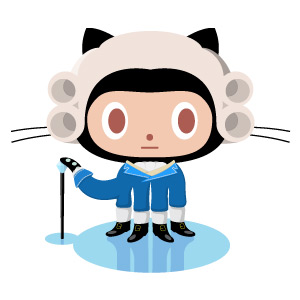
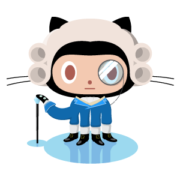

JS-ImageDiff Example:
See more examples at humblesoftware.github.com/js-imagediff. Sample images from the github imagediff demo.


See more examples at humblesoftware.github.com/js-imagediff. Sample images from the github imagediff demo.